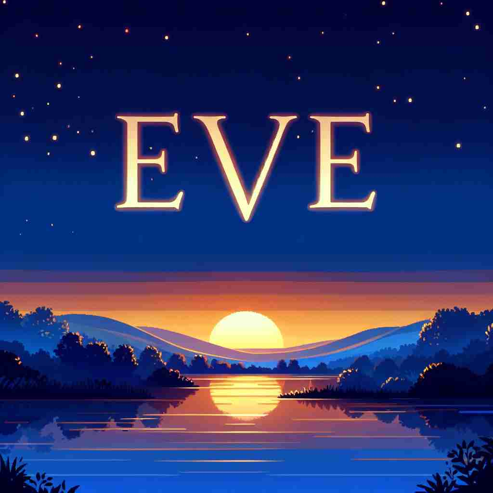
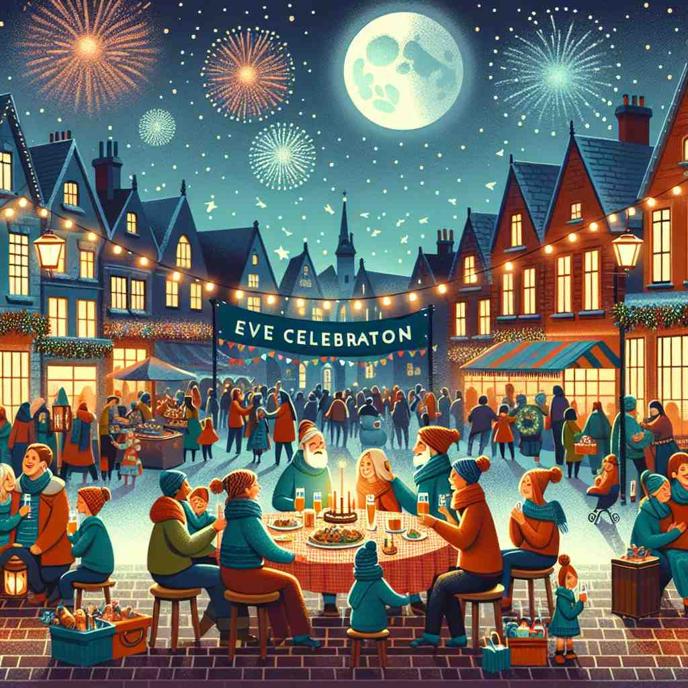

💬 Many people gather with friends on New Year's eve to celebrate together. 许多人在新年前夕与朋友聚会，共同庆祝。

💬 Many people celebrate New Year's Eve with fireworks and parties. 许多人在新年前夕通过烟火和派对来庆祝。
💬 The family is preparing for a special dinner on Christmas eve. 家庭正在为圣诞前夜的特别晚餐做准备。

💬 The community gathers for the Eve celebration with joy and excitement. 社区欢聚一堂，共同庆祝前夜，充满了喜悦和兴奋。
🧠 单词'eve'的核心含义是重要事件的前夜或前一天。想象站在时间的门槛上，即将跨入一个重要的日子。这个核心概念延伸出了其他含义，如事件即将发生的时期，普通的前一天晚上，以及特定宗教节日的前夜。通过联想站在时间的'门槛'上的画面，可以更容易理解和记忆'eve'的各种用法。
🔈 [iːv]
🗝️ n. the evening or day before an important event 重要事件前的晚上或前一天
🎭 想象一个家庭聚会的场景，全家人正忙着布置房间，准备迎接明天的婚礼。孩子们在欣喜若狂地用彩带装饰着，父母则忙着安排座位。整个房子充满了期待的气氛，充分展示了婚礼 'eve' 的含义。
💬 We always open presents on Christmas Eve. 我们总是在平安夜打开礼物。
🌳 源自古英语 'æfen'，意为 '傍晚'，也指节日前夕或重要事件的前一天。
🕸️ 1.evening: 傍晚 2.event: 事件 3.ever: 曾经
💡 可以联想 'EVE' 为 'Evening VEnture'（傍晚的探险），帮助记忆'前夕'事件的意义，比如圣诞前夜。